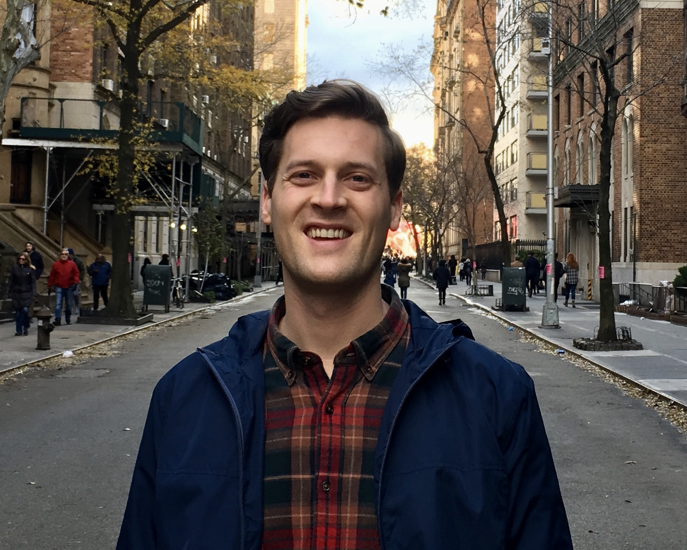

While working as a legal secretary, I found myself much more interested in automating tasks than
in my normal responsibilities. That, combined with my love for careful thinking,
storytelling, creativity, and innovation led me to programming and data science.
I'm very excited to learn and use these tools to help organizations create and apply
better solutions.
When I'm offline, I love to have long conversations with my spouse, go for walks, and read about
moral psychology and cognitive bias. And once my broken arm fully heals, I'll get back on my longboard.